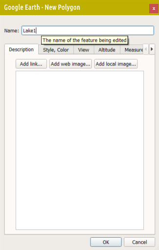
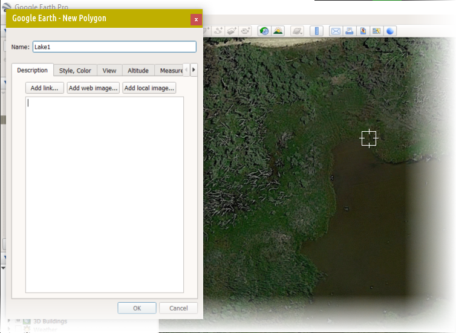
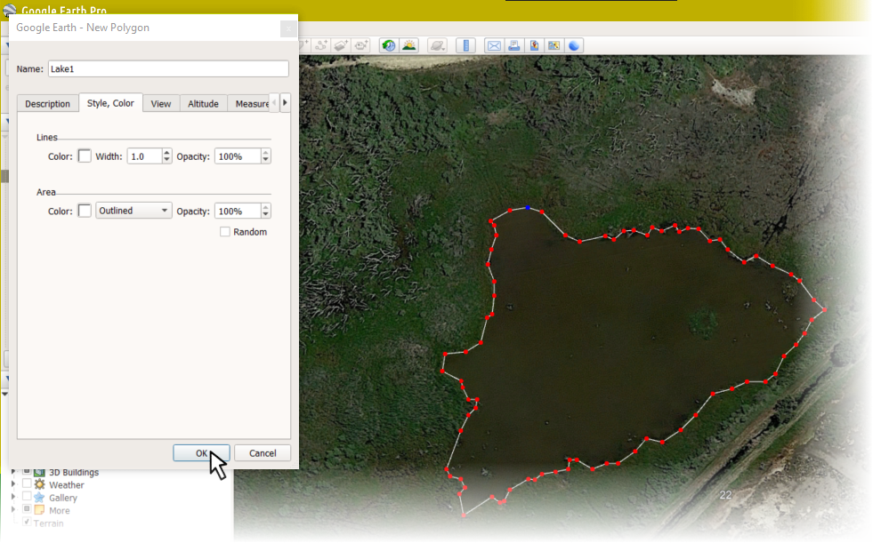

From Google Earth to kml to R
Introduction
Sometimes it's useful to add manually digitised information to maps. For example, seasonal ponds are not always shown on map tiles from providers such as OpenStreetMap or Stamen. While this can be overcome by using a map background made from aerial photograph tiles, we can often present out map data more clearly using graphics-based map tiles which do not include every detail of the land surface.
One way to quite easily get coordinates for map features is to use the drawing tools in the Google Earth app.
Using the polygon tool in Google Earth to digitise and save map features
In this context, digitise means nothing more than converting part of an image to numeric coordinates. The following set of instructions outlines a process we can use to save an irregular polygon shape from Google Earth Pro (a free download, so it's very accessible, or there is a web version).
Open Google Earth, and find the feature you want to digitise.
Click the polygon tool in the toolbar

Give the feature a name
Choose and click on the starting point
Click all the points you need to create your polygon
Click OK in the
New polygondialog
Your polygon will be visible in the ▾Places pane of the Google Earth app. Opposite-click and select
Save Place As...In the
Save file...dialog, underSave as type:, selectKml (*.kml), and save into your current R working directory.
Creating a KML file in the web version of Google Earth:
- On your computer, open Google Earth.
- On the left, click Projects.
- Click New project.
- Click Create KML File » Add to project.
- Select "Add placemark," "Draw line or shape," or "Fullscreen slide."
- A KML file is saved in your computer's browser storage.
Converting the saved .kml files for use in R
The sf package function st_read() can
handle many types of input file, include Google Earth .kml
files.
library(sf)
Lake1_sf <- st_read("https://github.com/Ratey-AtUWA/spatial/raw/main/Lake1.kml")## Reading layer `Lake1.kml' from data source `https://github.com/Ratey-AtUWA/spatial/raw/main/Lake1.kml' using driver `KML'
## Simple feature collection with 1 feature and 2 fields
## Geometry type: POLYGON
## Dimension: XYZ
## Bounding box: xmin: 115.9446 ymin: -31.91774 xmax: 115.9457 ymax: -31.91701
## z_range: zmin: 0 zmax: 0
## Geodetic CRS: WGS 84st_coordinates(Lake1_sf)[1:10,] # just the first 10 rows## X Y Z L1 L2
## [1,] 115.9449 -31.91701 0 1 1
## [2,] 115.9448 -31.91701 0 1 1
## [3,] 115.9448 -31.91704 0 1 1
## [4,] 115.9448 -31.91705 0 1 1
## [5,] 115.9448 -31.91707 0 1 1
## [6,] 115.9448 -31.91711 0 1 1
## [7,] 115.9447 -31.91714 0 1 1
## [8,] 115.9448 -31.91718 0 1 1
## [9,] 115.9448 -31.91722 0 1 1
## [10,] 115.9448 -31.91726 0 1 1Using the saved and converted .kml data on a map
The map at the end (Figure 1) uses the polygon coordinates saved in
the steps above to draw a polygon object on a maptiles map
background, after conversion using the st_transform()
function from sf. The OpenStreetMap tiles used do not show
the seasonal ponds visible on Google Earth, so adding manually digitised
map features makes sense.
UTM50S <- st_crs(32750)
Lake1_sf <- st_transform(Lake1_sf, crs = UTM50S) # convert to UTM Zone 50S
st_coordinates(Lake1_sf)[1:10,] # just the first 10 rows## X Y Z L1 L2
## [1,] 400244.0 6468278 0 1 1
## [2,] 400239.4 6468277 0 1 1
## [3,] 400234.4 6468274 0 1 1
## [4,] 400235.3 6468273 0 1 1
## [5,] 400235.9 6468270 0 1 1
## [6,] 400234.6 6468267 0 1 1
## [7,] 400233.7 6468263 0 1 1
## [8,] 400235.4 6468258 0 1 1
## [9,] 400235.4 6468254 0 1 1
## [10,] 400234.9 6468250 0 1 1library(maptiles)
extent <- st_as_sf(x = data.frame(x = c(399860,400520), y = c(6467920,6468350)),
coords = c("x","y"), crs=UTM50S)
aftiles <- get_tiles(extent, provider="OpenStreetMap", crop=TRUE, zoom=17)
par(oma=c(3,3,1,1), mgp=c(1.5,0.2,0), tcl = -0.2,
lend = "square", ljoin = "mitre", lheight=0.85)
plot_tiles(aftiles)
axis(1);axis(2);box(which="plot")
mtext("Easting (UTM Zone 50, m)", 1, 1.6, font=2, cex=1.2)
mtext("Northing (UTM Zone 50, m)", 2, 1.6, font=2, cex=1.2)
plot(Lake1_sf[1], add=TRUE, border="steelblue", col="#B0C0FF80", lwd=2)
text(mean(st_coordinates(Lake1_sf)[,1]),mean(st_coordinates(Lake1_sf)[,2]),
labels = "Lake 1", col="steelblue", cex=1.25, font=2)Figure 1: Plot of 'Lake1' feature shown in Google Earth digitisation steps above.
Packages
Giraud T (2022). maptiles: Download and Display Map Tiles. R package version 0.4.0, https://CRAN.R-project.org/package=maptiles.
Pebesma, E., 2018. Simple Features for R: Standardized Support for Spatial Vector Data. The R Journal 10 (1), 439-446, doi:10.32614/RJ-2018-009
CC-BY-SA • All content by Ratey-AtUWA. My employer does not necessarily know about or endorse the content of this website.
Created with rmarkdown in RStudio using the cyborg theme from Bootswatch via the bslib package, and fontawesome v5 icons.